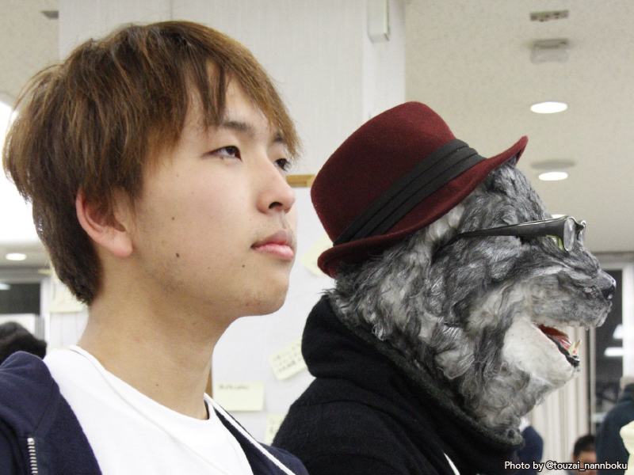

基本スペック
| ID | denari01 |
| 出身 | 兵庫県 |
| 学歴 | 高専卒(明石高専) |
| 職業 | 開発者 |
| 趣味 | デザイン |
| 年齢 | 20歳 |
スキルセット
デザイン
- チラシ
- パッフレット
- ロゴ
- Webサイト
- スマートフォンアプリ
プログラミング
- html / jade / css / sass / stylus
- php / wordpress / cakephp
- javascriipt / coffeescript
- gulp / grunt
- python / django
- swift / ios
- sparql / lod